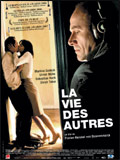

LA VIE DES AUTRES
Un film de Florian Henckel von Donnersmarck avec Thomas Thieme, Martina Gedeck, Ulrich Mühe
Durée : 2h15 -V.O. sous titrée en français-
Synopsis:
Au début des années 1980, en Allemagne de l'Est, l'auteur à succès Georges Dreyman et sa compagne, l'actrice Christa-Maria Sieland, sont considérés comme faisant partie de l'élite des intellectuels de l'Etat communiste, même si, secrètement, ils n'adhèrent aux idées du parti.
Le Ministère de la Culture commence à s'intéresser à Christa et dépêche un agent secret, nommé Wiesler, ayant pour mission de l'observer. Tandis qu'il progresse dans l'enquête, le couple d'intellectuels le fascine de plus en plus...
Anecdotes, notes de production et interview (Allo-ciné et dossier de presse ):
Un film plusieurs fois primé
La Vie des autres a obtenu de nombreuses récompenses lors de plusieurs festivals. Il a notamment remporté, lors de l'European Film Awards, le prix du meilleur film, du meilleur scénario et du meilleur acteur. Lors de la cérémonie des German Awards il a reçu les prix de la meilleure mise en scène, du meilleur acteur, du meilleur second rôle masculin, de la meilleure photo, des meilleurs décors et du meilleur scénario. Primé meilleur film allemand de 2006, il a reçu le Prix Satyajit Ray au London Film Festival ainsi que La Clef d'Or pour la musique originale de Gabriel Yared au Festival d'Auxerre de 2006. Mais le film de Florian Henckel von Donnersmarck a également remporté l'adhésion du public avec quatre Prix du public lors des festivals de Locarno, de Vancouver, de Varsovie et de Pessac en 2006.
Des souvenirs d'enfants pour aborder un sujet important
Ce qui a poussé Florian Henckel von Donnersmarck à réaliser ce film est une volonté de retranscrire l'émotion qu'il a ressenti étant enfant lorsqu'il passait la frontière entre Berlin-est et Berlin-ouest avec ses parents. Le réalisateur précise " cela m'intriguait et m'amusait de ressentir la même peur que les adultes. Et d'ailleurs, ils avaient vraiment peur : lorsqu'ils passaient la frontière pour aller voir leurs amis d'Allemagne de l'Est, mes parents voyaient bien qu'on nous regardait parce qu'on venait de l'Ouest. Les enfants ont un sixième sens quand il s'agit de capter les émotions. Je crois que si je n'avais pas vécu cela, je n'aurais pas su comment aborder un tel sujet ".
Quand l'image prend vie
Lors de ses études à l'école de cinéma de Munich, en 1997, Florian Henckel von Donnersmarck a vu une image qui l'a hanté jusqu'à aujourd'hui. Il s'agissait du plan moyen d'un homme assis dans une pièce sinistre qui, un casque sur les oreilles, écoutait une musique sublime, alors qu'il n'avait pas envie de l'écouter. Le cinéaste ajoute " Cet homme m'a poursuivi dans mes rêves, avant de devenir progressivement le capitaine Gerd Wiesler. "
Quatre ans de recherches pour 37 jours de tournages
Florian Henckel von Donnersmarck a consacré quatre années à des recherches approfondies ainsi qu'à l'écriture du scénario, avant de tourner le film à Berlin en 37 jours, du 26 octobre au 17 décembre 2004.
Des lieux empreints d'un passé douloureux
Le réalisateur a mené d'importantes recherches pour rendre son film plus réel, plus crédible. Il s'est rendu dans différents endroits où l'empreinte du passé reste marquée, comme le Musée Hohenschönhausen ou l'ancien ministère de la Sécurité d'Etat, devenu aujourd'hui l'Agence de Recherche et du Musée de la Normannenstrasse, ou encore le Bureau Birthler et ses archives. Florian Henckel von Donnersmarck précise que " les lieux captent très bien les émotions, et ces visites m'ont souvent davantage nourri que les nombreux ouvrages que, bien entendu, j'ai lus toute ces années et que les documentaires que j'ai visionnés. "
Des témoignages pour un film plus sincère
Florian Henckel von Donnersmarck s'est entretenu avec de nombreuses personnes ayant joué un rôle à l'époque. Il a d'ailleurs rencontré le lieutenant-colonel de la Stasi Wolfgang Schmidt, directeur du groupe d'évaluation et de contrôle du "HA XX", des prostituées de la Stasi, des personnes qui ont été enfermés dans un centre de détention de la Stasi, ... Le réalisateur a tâché de recueillir le maximum de points de vue différents, et a donc entendu plusieurs récits contradictoires, mais au final, celui-ci a eu le sentiment de réussir à se faire une bonne idée de ce qu'ont été cette époque et ses épreuves.
Un décor réel
Le film a été tourné dans les lieux mêmes où ont eu lieu les faits. L'équipe a d'ailleurs tourné dans l'ancien QG de la Stasi de la Normannenstrasse, adresse particulièrement redoutée à l'époque de la RDA, aujourd'hui transformé en musée. C'est là qu'ont été tournées les scènes avec Ulrich Tukur, qui tient le rôle du lieutenant-colonel Anton Grubitz. L'atmosphère propre à l'Allemagne de l'Est a été préservée grâce à leurs boiseries caractéristiques qui les associe à une période et à un style bien définis.
Le seul film tourné dans les locaux de la Stasi
La Vie des autres est le seul film à ce jour qui ait pu être tourné dans les locaux des archives de l'ancien QG de la Stasi, grâce à l'autorisation exceptionnelle de Marianne Birthler, directrice de l'Autorité Fédérale des Archives des Services de Sécurité de l'ex-RDA. Les locaux ont été réaménagés pour les besoins du film, puis numérisés après la fin du tournage. Car si les archives ont été sauvegardées, les bureaux qui les abritent ne ressemblent plus à ce qu'ils étaient à l'époque de l'Allemagne de l'Est.
Le réel au service de la fiction
Les protagonistes du film sont un mélange de plusieurs personnages réels. Mais le film n'est pas pour autant un film à clef. Les personnages, comme les événements, conservent volontairement une part de mystère. Pour le réalisateur, il était important de ne pas se perdre dans les détails historiques. " Mon but était de raconter une histoire sur des personnes réelles, mais en sublimant cette réalité et en adoptant un point de vue émotionnel. "
Un mémoire de fin d'études à la base d'une première collaboration
Florian Henckel von Donnersmarck a fait son mémoire de fin d'études sur le film d'Anthony Minghella, Le Talentueux M. Ripley, dont le compositeur est Gabriel Yared. Le réalisateur a eu l'impression de comprendre le film grâce à la musique. Il a donc souhaité travailler avec le célèbre compositeur pour son film, La vie des Autres. Florian Henckel von Donnersmarck n'a donc cessé d'écrire au compositeur Gabriel Yared, jusqu'à ce qu'il obtienne un rendez-vous avec lui pour lui parler du film. Le compositeur s'est tout de suite montré intéressé et leur collaboration a commencé.